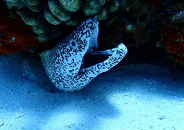
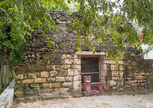
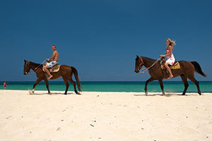

Cozumel Tour Information
Paradise Reef (Paraíso Reef) Tour
One of Cozumel’s most popular dive sites, Paradise Reef (Paraíso Reef) is famous for its clear water, diverse coral structures, and teeming schools of colorful fish. Here you can spot large sea species such as eels, rays, and nurse sharks in addition to smaller creatures such as seahorses, boxfish, and delicate pipefish. Cozumel | Viator
El Cedral Village Mayan Ruins Tour
El Cedral is a village on the southwest side of Cozumel. It is also the site of the island’s oldest Mayan ruins, which date to AD 800. Spanish explorers first discovered El Cedral in 1518, and it became the island’s first official city in 1847. Today it’s home to a small community of quaint houses and farms, as well as an annual festival. Cozumel | Viator
Horseback Ride at Mr Sancho's Beach
Saddle up for a 30-minute adventure by horseback at Mr Sancho’s beach. Get paired with a horse matching your skill level and follow a guide into the jungle, past mangrove forests and farms, before you reach the stunning shoreline of Cozumel’s white-sand beaches and sparkling blue waters. This family-friendly outing is suitable for riders of all levels. Cozumel | Viator
Location 1: Downtown Cozumel
Near the Playa del Carmen-Cozumel Ferry dock in el Centro de
Cozumel
800-123-4567
Location 2: Terminal Puerta Maya
Near the cruise ship port south of Cozumel
800-234-5678